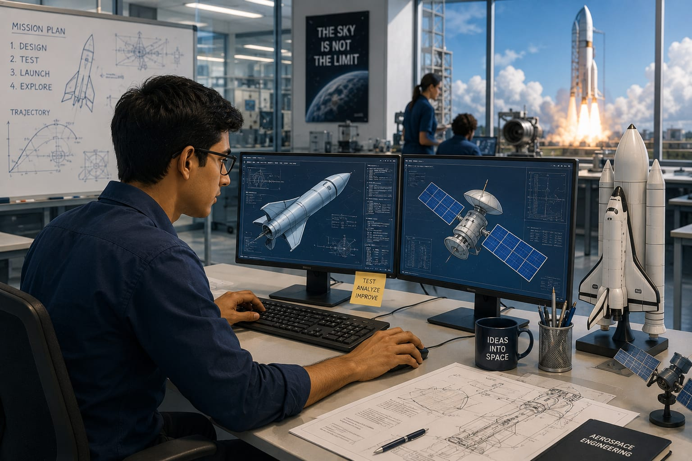

- Have you ever seen a video of a rocket launch into space?
- Rockets, satellites, and spacecraft need careful planning and design.
- They must travel safely through the atmosphere and space.
- The person who helps design and test these vehicles is called an Aerospace Engineer.
- 👉 In simple words: Aerospace Engineers design, test, and improve aircraft, rockets, satellites, and spacecraft.
Aerospace Engineer
🧑🎨 What Do They Do?

🎓 How to Become an Autonomous Systems Engineer
This course helps students learn the basics of aircraft, rockets, satellites, aerospace systems, and engineering fundamentals.
Diploma in Aerospace Engineering
Duration: 3 Years
Eligibility: Class 10 Pass with Science and Mathematics
Entrance Exam: Polytechnic Entrance Exam / Merit-Based Admission
📝 Exam Details
(Click on the exam name to see full details)
Polytechnic Entrance Exam Merit-Based AdmissionNote: A diploma provides a foundation in aerospace technology and engineering principles. However, most Aerospace Engineers continue to B.Tech through lateral entry to access advanced design, research, and space-industry roles.
These degree programs help students learn aerospace systems, rocket technology, satellites, spacecraft, aerodynamics, propulsion, and space engineering.
B.Tech / B.E. in Aerospace Engineering
Duration: 4 Years
Eligibility: 10+2 with Physics, Chemistry, and Mathematics (PCM)
Entrance Exam: JEE Main / JEE Advanced / State-Level Engineering Entrance Exams
B.Tech in Avionics
Duration: 4 Years
Eligibility: 10+2 with Physics, Chemistry, and Mathematics (PCM)
Entrance Exam: JEE Advanced (IIST) / JEE Main
📝 Exam Details
(Click on the exam name to see full details)
JEE Main JEE Advanced University Entrance Exams State Engineering Entrance ExamsNote: A B.Tech in Aerospace Engineering is the most direct route to becoming an Aerospace Engineer. Students learn aircraft, rockets, satellites, spacecraft, and advanced aerospace technologies.
These programs allow diploma holders to directly enter the second year of an engineering degree and specialize in aerospace technologies, rockets, satellites, and spacecraft systems.
B.Tech Lateral Entry in Aerospace Engineering
Duration: 3 Years (Direct Entry to 2nd Year)
Eligibility: Diploma in a Relevant Engineering Stream
Entrance Exam: Lateral Entry Entrance Test (LET) / State Lateral Entry Exams
Note: Diploma holders can enter directly into the second year of B.Tech Aerospace Engineering through lateral entry. This pathway saves one year and leads to the same degree as regular B.Tech students.
These advanced programs help students specialize in aerospace systems, rocket technology, spacecraft design, space science, research, and advanced engineering.
M.Tech / M.E. in Aerospace Engineering
Duration: 2 Years
Eligibility: B.E. / B.Tech in Aerospace, Aeronautical, Mechanical, Electronics, or Related Engineering Branches
Entrance Exam: GATE (Aerospace Engineering - AE)
M.Tech / M.S. in Rocketry or Space Science
Duration: 2 to 3 Years
Eligibility: B.E. / B.Tech in a Relevant Engineering Branch
Entrance Exam: GATE / University-Level Entrance Test or Interview
Note: Postgraduate studies help Aerospace Engineers specialize in areas such as spacecraft design, propulsion systems, aerodynamics, satellites, rocketry, and advanced aerospace research.
Note:
(Age limits, marks, and admission process may vary depending on the college or state. These courses are available in many colleges and universities across India. You can choose colleges based on your location, budget, and entrance exams.)
🏛️ Top Colleges for Aeronautical Engineering
(Tap on a college to view the details)
After 10th Pass (Diplomas)
PSG Polytechnic College, Coimbatore Indian Institute of Aeronautical Engineering (IIAE), Dehradun Nehru College of Aeroanutics and Applied Sciences, Coimbatore Hindustan Institute of Engineering Technology (HIET), Chennai Indian Institute for Aeronautical Engineering & Information Technology (IIAEIT), PuneAfter 12th Pass (Bachelor's Degrees)
Indian Institute of Space Science and Technology (IIST), Thiruvananthapuram Indian Institute of Technology (IIT) Madras, Chennai Indian Institute of Technology (IIT) Bombay, Mumbai Indian Institute of Technology (IIT) Kanpur, Kanpur Indian Institute of Technology (IIT) Kharagpur, Kharagpur Punjab Engineering College (PEC), Chandigarh MIT Manipal, ManipalAfter Diploma (Lateral Entry)
Anna University (MIT Campus), Chennai Jadavpur University, Kolkata COEP Technological University, Pune Dayananda Sagar College of Engineering (DSCE), BengaluruAfter Graduation (Master's Degrees / Deep R&D)
Indian Institute of Science (IISc), Bangalore Indian Institute of Technology (IIT) Madras, Chennai Indian Institute of Technology (IIT) Bombay, Mumbai Indian Institute of Technology (IIT) Kanpur, Kanpur Indian Institute of Space Science and Technology (IIST), Thiruvananthapuram Defence Institute of Advanced Technology (DIAT), PuneSTEP 1
Imagine you are working as an Aerospace Engineer.
STEP 2
Your team is building a new rocket.
STEP 3
You help design the rocket and its systems.
STEP 4
You test the rocket to make sure it is safe.
STEP 5
The rocket is launched and carries a satellite into space.
STEP 6
If you enjoy space, science, and technology, this career may be right for you.
Where do Aerospace Engineers work? (Job Roles + Growth)
These are some roles you can explore in Aerospace Engineering.
You usually start with beginner roles and grow with experience.
🟢 Beginner Roles
🔧
Junior Aerospace Technician
(After Diploma)
Assists in assembling and testing aerospace systems.
📡
Graduate Engineer Trainee
(After B.Tech)
Supports engineers in satellite and aircraft projects.
🔵 Mid-Level Roles
🚀
Aerospace Engineer
(After B.Tech + Experience)
Designs and tests aircraft, rockets, and satellites.
🛰️
Avionics Engineer
(After B.Tech Avionics + Experience)
Develops flight-control and communication systems.
🟣 Advanced Roles
🎯
Mission Director
(After M.Tech / Advanced Specialization)
Leads space missions and launch operations.
🌍
VP of Space Systems
(After Executive Program + Experience)
Leads large aerospace and satellite programs.
🚀
Space Agencies
Develop rockets, satellites, and space missions.
✈️
Aircraft Manufacturing Companies
Design and build commercial and military aircraft.
🛰️
Satellite Companies
Create and operate satellite systems.
🛡️
Defence Aerospace Organizations
Develop advanced aerospace and defence systems.
🔬
Research & Development Centers
Innovate future aerospace technologies.
🌍
Launch Service Companies
Support rocket launches and space missions.
(Click Yes or No for each question)
1. Have you ever seen a video of a rocket launch?
2. Have you ever wondered how a rocket travels through space and reaches its destination?
3. Do you like to learn how rockets, satellites, and spacecraft are designed?
4. Have you ever wondered who designs the rockets and spacecraft used for space missions?
5. Imagine a company is preparing a mission to send a satellite into space. Your job is to help design the rocket, test its safety, and make sure the satellite reaches the correct orbit. Does this sound exciting to you?